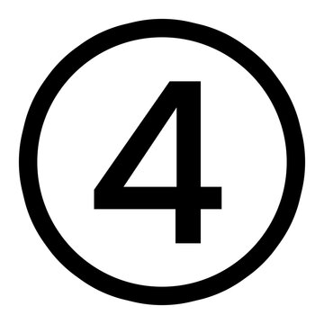

Invasive Plants
These are non-native plants that consume wildlife habitat and compete with crops. Some of them, like Callery pear, are STILL being sold at nurseries. We can't believe it either.
Stop the invasion! Protect Missouri's natural heritage. Some plants and animals really mess up the ecosystem, and we want to help people figure out which ones are which and what to do about them.
It's easy to mix these up, so here's the deal:
These are NOT from Missouri. They came from somewhere else and they spread really fast and push out the stuff that's actually supposed to be here. Like kudzu or Japanese knotweed. They can be really hard to get rid of once they take over.
These ARE from Missouri, but they still cause problems. Like poison ivy. It's native, but if it grows in a big patch it can be a nightmare. Or raccoons. They're supposed to be here, but when they keep getting into your chicken coop, they're a nuisance.
This one can be native OR non-native. It just means the species spreads super fast and outcompetes everything else. Like Callery pears in a grassland or bush honeysuckles in a woods. They basically take over and won't share.
Native species have been in Missouri a long time. They evolved here. Other animals depend on them. They're part of how the ecosystem works.
Nonnative species were brought in, usually by people. They didn't evolve here so they don't fit in. Sometimes that's fine, but a lot of the time they cause problems because nothing here knows how to deal with them.

These are non-native plants that consume wildlife habitat and compete with crops. Some of them, like Callery pear, are STILL being sold at nurseries. We can't believe it either.

These are Missouri natives, but they get out of hand. Poison ivy, sumac, cattails in your pond. They're supposed to be here but sometimes they take over too much.
Raccoons, coyotes, Canada geese taking over your pond, moles tunneling your yard. These are native to Missouri but they cause a LOT of problems for property owners.
The Missouri Invasive Plant Council (MoIP) works to identify and control invasive plants across the state. In 2019, MDC adopted their list as the official Missouri invasive plant list. Here are the main ones:
Bush Honeysuckle, Common Buckthorn, Callery Pear, Autumn Olive, Multiflora Rose, Japanese Honeysuckle, Wintercreeper, Heavenly Bamboo, Japanese Knotweed, Kudzu
Japanese Stiltgrass, Reed Canary Grass, Old World Bluestem, Johnson Grass, Leafy Spurge, Tall Fescue, Canada Thistle, Musk Thistle, Spotted Knapweed, Sericea Lespedeza
Hydrilla, Didymo, Common Reed, Garlic Mustard, Chinese Yam, Japanese Hop, Crown Vetch, Purple Loosestrife, Teasel, White and Yellow Sweet Clover
Sometimes our native plants become nuisances. They're supposed to be here, but they get out of control. Here are the main ones we found:
Poison Ivy, Smooth Sumac, Gray Dogwood, Osage Orange, Black Locust, Sesbania
Cattail, Water Primrose, Duckweed, Watermeal, Floating Leaf Plants (water lily, water shield, lotus), Submerged Plants (coontail, elodea, naiad), Algae
These are all native to Missouri. They're supposed to be here. But sometimes they get into your yard, your pond, or our chicken coop and cause a lot of damage. If wildlife is damaging your property, you may be able to control it, but you should learn the rules first.
Squirrels, Chipmunks, Raccoons, Opossums, Moles, Voles, Weasels, Groundhogs, Cottontail Rabbits, Armadillos
Coyotes, Black Bears, Badgers, Skunks, Beavers, Muskrats, Otters, Deer
Common Snapping Turtles, Canada Geese, Blackbirds, Bats
Invasive species can harm the natural landscape, native wildlife, outdoor recreation, working lands, and the economy. When you're picking plants for your yard, try to choose Missouri natives. And if you can, pull out any invasives you've got. Your local wildlife will thank you.
Missouri Department of Conservation
mdc.mo.govWe're a kid team. Stuff happens. If you see a typo, a broken link, or have an idea, let us know.